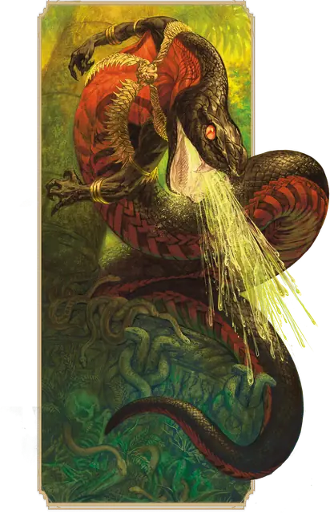

Отродье юань-ти
Yuan-ti Abomination
Большое Чудовище, Нейтральное Злое

Класс Защиты 15 Инициатива +6 (16)
Хиты 127 (15к10 + 45)
Скорость 40 футов, Лазания 30 футов
| мод | спас | ||
|---|---|---|---|
| СИЛ | 19 | +4 | +4 |
| ЛОВ | 16 | +3 | +3 |
| ТЕЛ | 17 | +3 | +3 |
| мод | спас | ||
|---|---|---|---|
| ИНТ | 17 | +3 | +3 |
| МДР | 18 | +4 | +4 |
| ХАР | 15 | +2 | +2 |
Иммунитеты Яд; Отравленный
Чувства Тёмное зрение 60 футов, пассивное Восприятие 17
Языки Общий, Бездны, Драконий
Опасность 7 (2 900 опыта; БВ +3)
Особенности
Сопротивление магии. Юань-ти совершает с Преимуществом спасброски от заклинаний и прочих магических эффектов.
Действия
Мультиатака. Юань-ти совершает две атаки Укусом и может использовать Сотворение заклинаний, чтобы сотворить Внушение, если оно доступно.
Укус. Бросок рукопашной атаки: +7, досягаемость 5 фт. Попадание: 11 (2к6 + 4) Колющего урона плюс 10 (3к6) урона Ядом.
Сдавливание. Спасбросок Силы: Сл 15, одно существо Большого размера или меньше в 5 футах. Провал: 28 (7к6 + 4) Дробящего урона, и цель становится Схваченной (Сл освобождения от захвата 14); пока длится захват, она также Опутана. Успех: Только половина урона.
Ядовитые брызги (Перезарядка 5–6). Спасбросок Телосложения: Сл 14, каждое существо в 30-футовом Конусе. Провал: 21 (6к6) урона Ядом, и цель становится Отравленной до конца следующего хода юань-то. Пока она Отравлена, она также Ослеплена. Успех: Только половина урона.
Сотворение заклинаний. Отродье юань-ти сотворяет одно из следующих заклинаний, не нуждаясь в Материальных компонентах (заклинательная характеристика — Мудрость, Сл спасброска заклинаний 15):
Неограниченно: Дружба с животными
3/день: Внушение
Бонусные действия
Перевоплощение. Юань-ти либо перевоплощается в змею Большого размера, либо возвращается в истинную форму. Его статистика не меняется в зависимости от формы, если не указано обратного. Снаряжение, которое он носит или несёт, не трансформируется.
Бонус мастерства +3
Среда обитания Болота, Город, Леса, Пустыня
Сокровища Реликварные
Юань-ти
Жаждущие власти змеиные заговорщики
Заключая сделки с тёмными потусторонними силами, юань-ти обменивают свою человечность на смертоносность и хищное коварство змей. Из потаённых твердынь они манипулируют правителями и богачами, стремясь подчинить себе мир. Многие юань-ти владеют ядовитой магией, которая часто проявляется в виде змеиных клыков или разящих змей.
Юань-ти сохраняют человекоподобный облик, но с пугающими змеиными чертами в разных вариациях. У одних лишь редкая чешуя на коже, другие же — исполины, в которых от змеи больше, чем от человека. Как правило, чем больше в юань-ти змеиного, тем выше его положение среди сородичей.
Юань-ти могут всё больше становиться рептилиями в ходе опасных противоестественных обрядов. Совершите бросок по таблице «Преображения юань-ти» для вдохновения или определите сами, как именно юань-ти приобрёл свой змеиный облик.
Преображения юань-ти
| 1к6 | Юань-ти обрёл змеиный облик благодаря… |
| 1 | Сделке с пантеоном змеиных богов, продав часть души. |
| 2 | Проклятию, наложенному на его народ в далёком прошлом. |
| 3 | Яду грёз Мерршолка, дремлющего змеиного бога. |
| 4 | Экспериментам духовных наг или других юань-ти. |
| 5 | Ритуалу с использованием шкуры демонической змеи. |
| 6 | Испытаниям, избавляющим от человеческих «слабостей». |
Отродья юань-ти избавились почти от всех следов человеческого и похожи на гигантских гуманоидных змей с чешуйчатыми руками и кистями. В бою они с удовольствием сдавливают врагов мощными кольцами своих тел или впиваются в них ядовитыми клыками. Отродья также умеют превращаться в змей, и в таком облике их невозможно отличить от обычных рептилий.
Однако главная угроза отродий юань-ти кроется не в физической силе, а в их хитрости. Эти кукловоды часто возглавляют культистские ячейки из других юань-ти и направляют их в осуществлении сложных заговоров. Отродья юань-ти избегают лишнего риска и обычно плетут интриги из потаённых убежищ, где их защищают другие юань-ти и змеиные стражи. Эти хладнокровные вожди по-особому понимают потусторонние силы, даровавшие юань-ти могущество, и почти всегда имеют в запасе коварные магические ловушки и запасные планы.